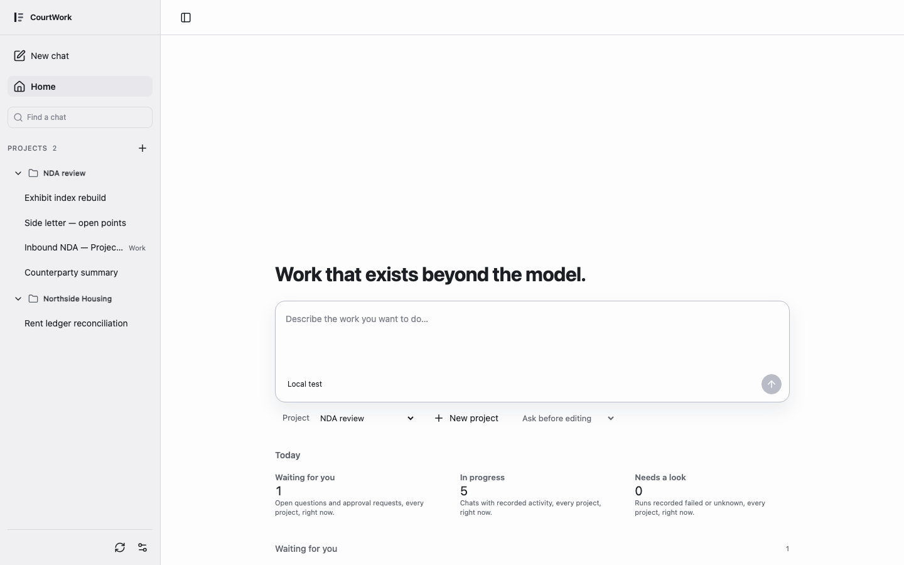
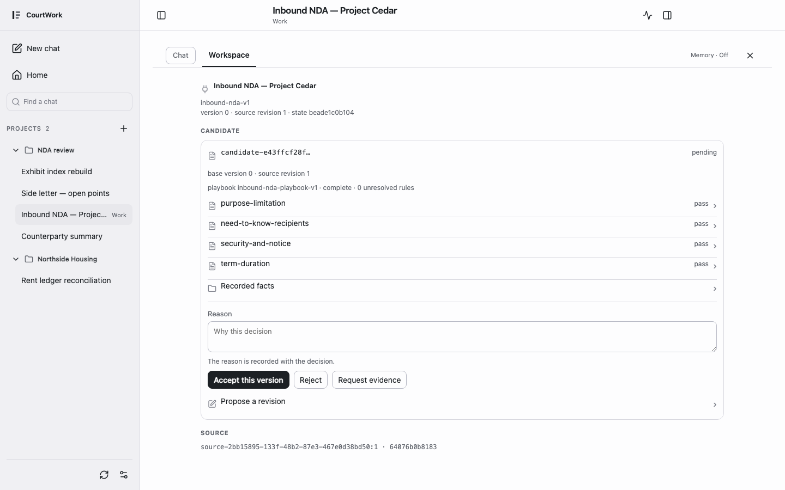

Turn AI output into work you can build on.把 AI 的产出，变成接得下去的工作。
CourtWork 是一个实验中的本地 AI 工作空间：处理本地材料，检查每一次工具调用，追溯生成的文件。它正在成为可以审阅、裁定，并跨会话续行的工作面。
Read the paperRun it locallySource

172130e · synthetic data · local deterministic provider · 1440×900 light · Home：两个 Project，一个 Chat 在等待一次写入批准。01
Raw → Governed
Work agents need governed state, not longer transcripts.
Agent 需要的是受治理的状态，不是更长的对话记录。
同一次 Run 留下三样东西，责任各不相同。它们来自同一个来源，但没有一样是另一样的副本。
Event log
这次 Run 里发生的每件事，按发生顺序：请求、工具调用、批准、回答、结果。它是原始历史；这里没有任何一条自己就能生效。
verified with synthetic data
001 user.message
002 run.status
003 runtime.bound
004 assistant.delta
005 assistant.delta
006 assistant.delta
007 assistant.delta
008 assistant.message
009 tool.start
010 permission.open
011 run.status
012 permission.resolved
013 run.status
014 artifact.writtenWork state
这次 Run 之后，Work 里正式成立的东西：候选、证据、决定、版本。只有通过验证与裁定的变化才写到这里。
verified with synthetic data
matter Synthetic inbound NDA
sources 1
candidates 1
decisions 0
stateVersion c07c0cea3677ca38fa8edbf92e393f3f9a44f3e57a3797f1df7b66cd73991551Compiled context
这次 Run 实际绑定的内容：resource 修订与 hash、加载了什么、用了多少 token。它是从治理状态编译出的最小充分投影，不是整段历史。这段记录里没有加载任何 skill 或 reference，页面如实显示。
verified with synthetic data
mode recorded-run
revision 0
hash a339e6436ae7de4e3989efda2164d003d626397ba6873cdd729b2ff0450e063b
resources 22
loaded 0
tokenUsage input 3 · output 4 · turns 3synthetic data · recorded at CourtWork 172130e · 三个视图读取同一份记录
02
A matter in motion
一段已经记录下来的工作，可以逐步重放。这里没有模型在运行；每一次点击显示的都是记录下的事实。
Replay · synthetic data · recorded at CourtWork 172130e
标本本身是一段会话、两次 Run。第一次 Run 产生一次写入批准、一个 Question 与一个文件；第二次 Run 产生候选，随后是决定与修订。每一步同时可看上一段的三个层级。
-
1Home
写下要做的工作。选一个 Project，并决定文件如何被编辑：Ask before editing、Allow edits，或 Read only。
runs locally
-
2Run
每一次工具调用在发生时显示，不藏在摘要后面。
verified with synthetic data
-
3Approval
写入之前 Agent 先问。你看到确切的路径、大小与内容 hash，只批准这一次写入。
verified with synthetic data
-
4Question
需要一个事实时 Agent 提问；回答随 Run 一起记录。回答不等于授权。
verified with synthetic data
-
5File
打开这次 Run 产生的文件。它的身份是记录下来的字节，不是聊天里的一段文字。
verified with synthetic data
-
6Stop · reconnect
取消 Run，关掉页面，再回来：Chat 显示最后一次确认的状态。
verified with synthetic data
-
7Continue in Work
把这个 Chat 绑定到一个 Matter。历史与 Project 都保留；不复制，不迁移。
verified with synthetic data · Astra 核对
-
8Candidate → Decision
候选逐条附证据与来源。人接受、退回，或要求补证据；正式成果与候选分开。
verified with synthetic data · Astra 核对
This is a replay. Nothing here is sent anywhere; the decide and revise buttons show what a recorded request looked like.
这是重放。这里没有任何东西被发出；决定与修订按钮只显示当时记录下的请求。
03
Work that exists beyond the model.让工作存在于模型之外
概率模型已经能搜索、比较、解释、起草和调用工具，却不能凭一次输出取得正式工作所需的事实效力、行动权限、完成状态和责任归属。一次 Run 会结束，模型会替换，上下文会压缩；Matter、Artifact、Review decision 与未完义务必须继续存在。
于是一次 Run 的两端分开治理。输入侧把稳定的 Work Contract、当前状态与相关资源投影为这一次任务的 Context；输出侧把模型或人的提议视为 Candidate，只有经过验证、授权与适用的 Review，才写入 Committed Change 并更新当前状态。
单次输出的质量因此不等于跨时间工作的质量。只要 output 会成为后续工作的 input，运行之后留下什么、失效什么、下一次先看什么，就是系统能力的一部分。
CourtWork 按 Schema Engineering 9.6（d78fd31）建造。论文是这一页所有观点的权威；CourtWork 是这些观点被试验与检验的地方。产品状态从不修改论文；能够泛化的工程结果带着固定 commit 进入论文的 Practice Index。
04
Review is a first-class surface
候选不是结果。它带着证据、来源和版本进入审阅面；人的决定改变正式状态，工具批准不改变。
- Proposal
- 逐条规则的候选，绑定它所依据的来源版本。
- Evidence
- 每条候选引用的来源片段与事实。缺证据的候选照样显示，并标为缺。
- Decision
- 接受、退回、要求补证据。同一决定重复提交是幂等的；针对过时版本的决定被拒绝。
- Provenance
- 谁、何时、基于哪个版本。产生候选的一方离场后，历史仍然可读。
这不是把聊天记录换一种排版，也不是把代码 diff 搬过来。审阅的对象是候选与证据，不是消息。

172130e · synthetic data · local deterministic provider · 1440×900 light · Work Review：一条候选待决定。05
Evidence
页面上的每一条声称，对应仓库里一条可以打开的证据。没有用户见证，没有虚构指标。
| 项 | 文案 | 入口 |
|---|---|---|
| Benchmark | Continuity conformance：六个用例检验正式状态在来源替换、回执重放、重启、伪造 actor 与过期 base 之下是否保持。结果只在协议内有意义。 | benchmarks/continuity/ |
| Fixture | 由真实 HTTP、Pi loopback 与 Core 生成的确定性数据包，附 sha256。 | app/tests/fixtures/work-core/nda-packets.json |
| Tests | 数字由构建时从发布 SHA 计算，不手写。 | npm --prefix app test · 252 passed, 0 failed |
| Version | Paper 9.6 d78fd31 · 产品 172130e · 站点 d3e9e74 | PAPER.md |
| Decisions | 架构裁决，从第一条起可读。 | engineering/decisions.md |
| Paper revision | 论文的版本级变化。 | CHANGELOG.md（Schema Engineering） |
Eval
固定结构，每问只显示发布 SHA 下真实存在的答案，缺者写 not yet。有界模型 pilot 未跑之前不出现任何对比分数；E 与 S 的通过数只从发布 SHA 上重跑生成的记录文件读取。
- What was tested?
- Continuity conformance。六个用例，每个 checkpoint 校验完整的语义状态：观察是否在场、来源版本、候选的归属与依据、义务语义、效果计数、成果内容、决定与回执的绑定、拒绝或重启之后状态是否保持。它衡量协议保真度，不衡量 SE 的增量价值。
- Against what?
- S：一个认真实现的普通持久化机制，带版本化来源与文档、提交、任务、审批、审计与回执表、事务与 compare-and-set、绑定 payload 的幂等。E 是 CourtWork 的 Core。两者都应通过；这是校准，不是优势证明。只有 transcript 加检索的条件 T：not yet。
- With which model?
- 没有模型。两个条件都由脚本化的受信客户端驱动，记录里 model 为空。有界模型 pilot：not yet。
- Which harness?
benchmarks/continuity/run.mjs编排六个用例；E 经CoreClient驱动真实 Core，S 经standard.py；observe.mjs把原始输出映射为语义字段，grade.mjs独立校验。CourtWork172130e。- Which fixture?
- 一个合成的“证据备忘录”族，开发集，六个用例：normal · stale-source · receipt-replay · restart · actor-spoof · cas-conflict。角色与 ID 在执行前冻结，adapter 不决定哪一个候选是对的。
- What was held constant?
- 报告内固定被测文件的 sha256 与 git head 及 dirty 标志；每次尝试的角色与 ID 在执行前冻结；尝试清单在执行任何一条之前落盘。
- What failed?
- 首次运行 11/12：cas-conflict 用例误命中一个已关闭的候选。修正的是用例（改为同一 base 上的第二个待决候选），Core 没有为迎合测试而改动；随后 12/12。发布 SHA 上的重跑结果从记录文件读取；没有记录则 not yet。
- Can I reproduce it?
node --test benchmarks/continuity/grade.test.mjs；node benchmarks/continuity/run.mjs --output /absolute/path/result.json。需要仓库根目录、Node 22.19 以上、Python 3 标准库；输出文件须是新文件；不用 provider、不联网。
E 6/6 · S 6/6 · se-continuity-conformance-v1 · CourtWork 172130e · model null
拒绝结果的四个名字（stale_source · request_conflict · authority_rejected · version_conflict）是被测系统的正确拒绝，不是评测的失败分类。
声称表
| 可写的声称 | 状态 | 证据入口 |
|---|---|---|
| 从独立 clone 安装、测试、启动 | verified with synthetic data | evidence/final-integration-20260908/sync.md |
| Run 链：回答、精确写入批准、文件身份、预览、拒绝、停止、断线重连 | verified with synthetic data | evidence/final-integration-20260908/README.md |
| 运行控制：配置 CAS、来源、上下文、MCP 生命周期 | verified with synthetic data | evidence/rc/ |
| MCP 未知效果后封闭后续调用 | verified with synthetic data | evidence/final-integration-20260908/mcp-unknown.json |
| Continue in Work：Chat 绑定 Matter，历史与 Project 保留 | verified with synthetic data · Astra 核对 | evidence/fe03/ |
| 合成 NDA：逐规则候选 → 审阅 → 正式决定；幂等与过时版本拒绝 | verified with synthetic data · Astra 核对 | evidence/wk10b2-main-integration-20260908/ |
| 新 Session 继续同一事项；产生候选的一方缺席时历史可读 | verified with synthetic data · Astra 核对 | evidence/se-continuity-20260908/ |
| Models：Catalog provider · Compatible endpoint · Local endpoint；Test connection、Fetch models | runs locally | evidence/fe02-main-integration-20260909/ |
| Settings 整页；Appearance 本设备偏好 | runs locally | evidence/cc-s-main-integration-20260909/ |
| 真实模型 provider 路径 | not yet | 用户在界面配置 |
| 有界模型 pilot 与对比分数 | not yet | — |
| 事项级记忆、Temporary chat | not yet | — |
| 桌面安装包、签名 | not yet | — |
not yet 行只写目标，不写日期。“Astra 核对”行的证据路径由非作者在发布 SHA 下核对；不成立者降档，不删行。
06
Build / inspect / reproduce
git clone https://github.com/lesPrivilege/Courtwork.git
npm --prefix app ci
npm --prefix app start -- --data-dir /absolute/path/outside-repo/courtwork-data --port 8845
npm --prefix app test需要 Node.js 22.19 以上、Python 3、Git 2.36 以上。默认 provider 是本地确定性 fake；真实 provider 在界面里配置，密钥不进入仓库、聊天或截图。
| 入口 | 文案 |
|---|---|
README.md | 运行、验证与范围。 |
engineering/current.md | 已交付能力、证据边界、下一单。 |
engineering/architecture.md | 模块所有权与边界。 |
engineering/roadmap.md | 长期路线与验证门。 |
docs/runtime-control/INDEX.md | 资源、权限、MCP 与上下文绑定。 |
docs/interface-components.md | 布局、消息、工作面、焦点与状态 owner。 |
PAPER.md | 采用的论文版本与反馈路径。 |
- Web UI.
- 原生 ES module 前端。它投影 Chat、Run、文件与运行资源；不持有工作状态，不持有凭据。
- Host runtime.
- Pi AgentSession 0.85.1 执行 Run；本地控制面持有配置、作用域、权限策略、MCP 生命周期与 Run 准入。已安装、运行中、已曝光、已许可是四件分开的事。
- Domain core.
- 一个样本 Core 持有 Matter、候选、证据与决定，带 compare-and-set 版本与幂等的人类决定。它是开发样本，不是通用法律产品。
CourtWork 运行在 Pi agent SDK（@earendil-works/pi-* 0.85.1）与官方 MCP client 2.0.0 之上；harness core 在其上加入策略、状态与审阅边界，不重写 loop。